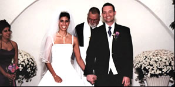

|
|
|
|  | |
|
Create Your Own Wedding Ceremony.
Each ceremony is uniquely yours. Each ceremony is uniquely yours. |
|
Ask about our network of wedding venues and services. |
 Dr.
Rich Goldman will work directly with you in creating and designing your
wedding ceremony.
Dr.
Rich Goldman will work directly with you in creating and designing your
wedding ceremony.
Rev. Rich and Patty thoroughly enjoy the creativity that the bride and groom bring to their picture of their wedding. It allows for the introduction of personal, cultural and religious traditions as desired. Every ceremony is uniquely designed to meet:
- your needs
- the needs of your loved ones
- the needs of your community
Rev. Rich will help you understand the elements of a marriage ceremony and assist you in customizing every aspect of it to your wishes. Rev. Rich is a member of both the Association of Interfaith Ministers and the Interfaith Ministries International. He, as well as his wife Patty, is a Licensed Professional Counselor and National Certified Counselor focusing on Marriage, Family and Wellness Counseling. He enjoys officiating at weddings anywhere in the U.S. or abroad, with Patty serving as the ceremony coordinator.
Donations to ACT II Inc. are tax deductible as contributions to a charitable organization.
386-672-3784
Home :: About US :: Coaching Programs :: Interfaith Programs